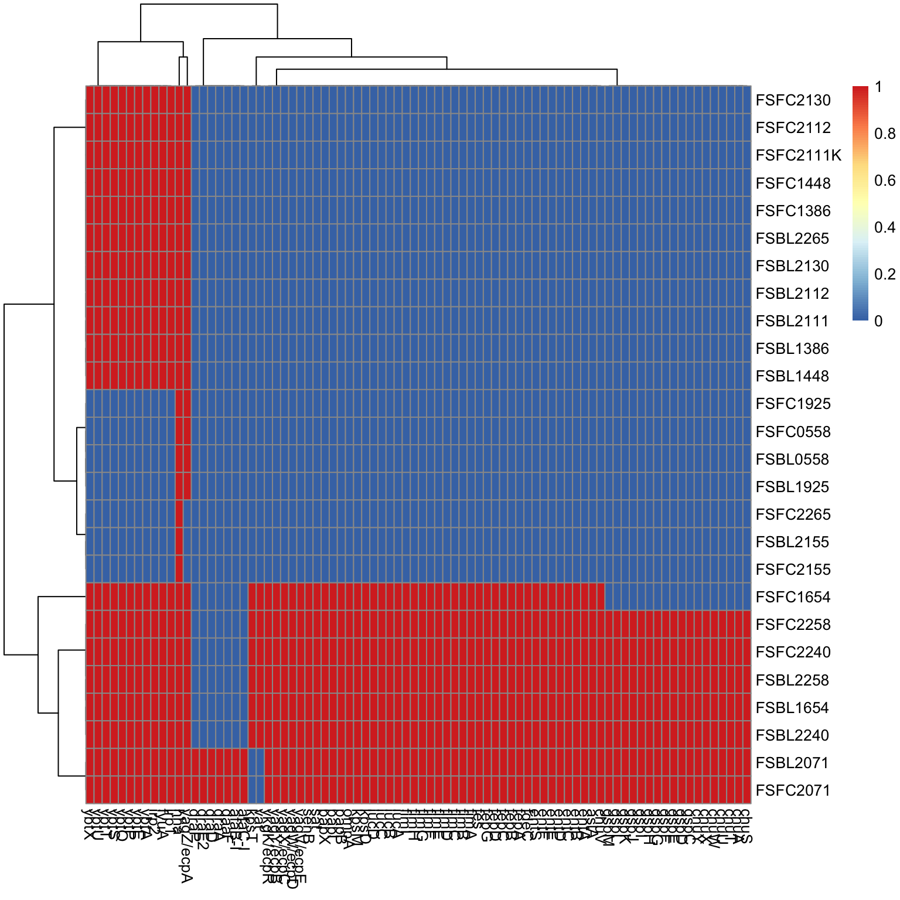
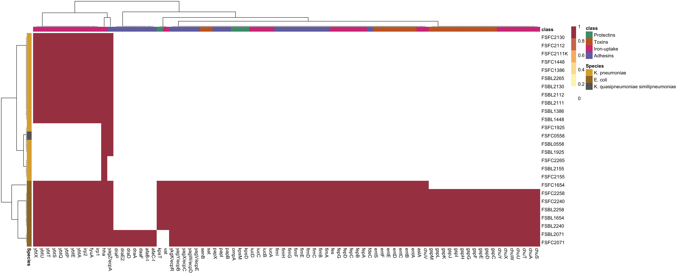
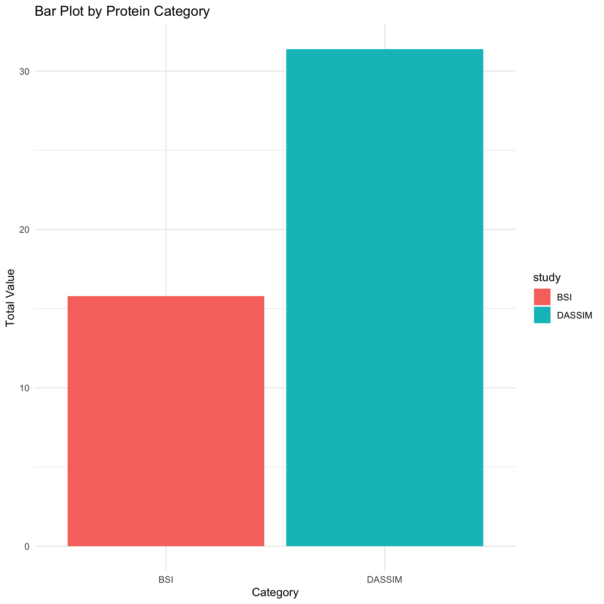
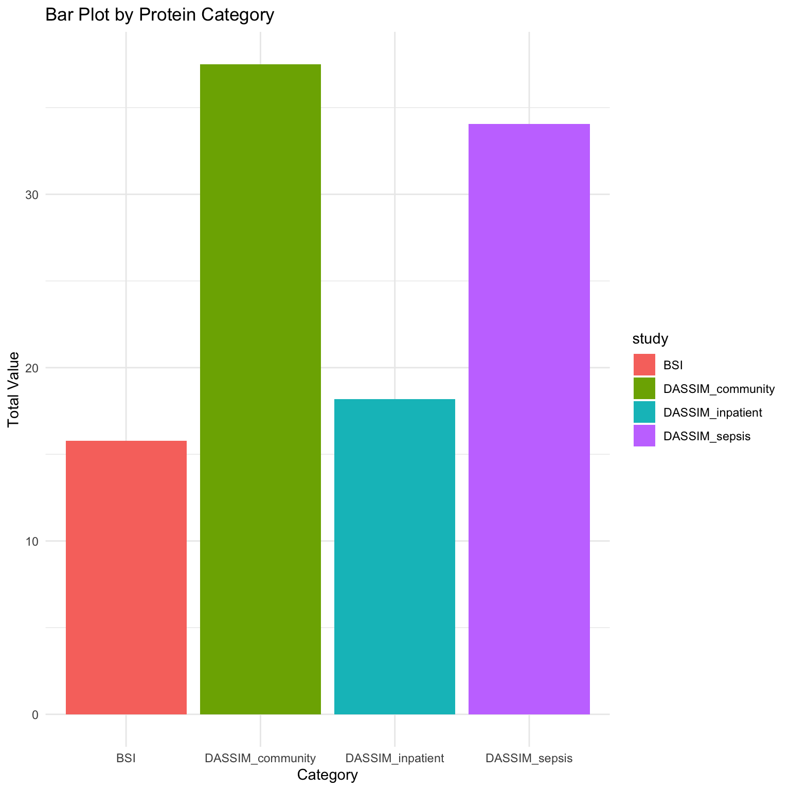
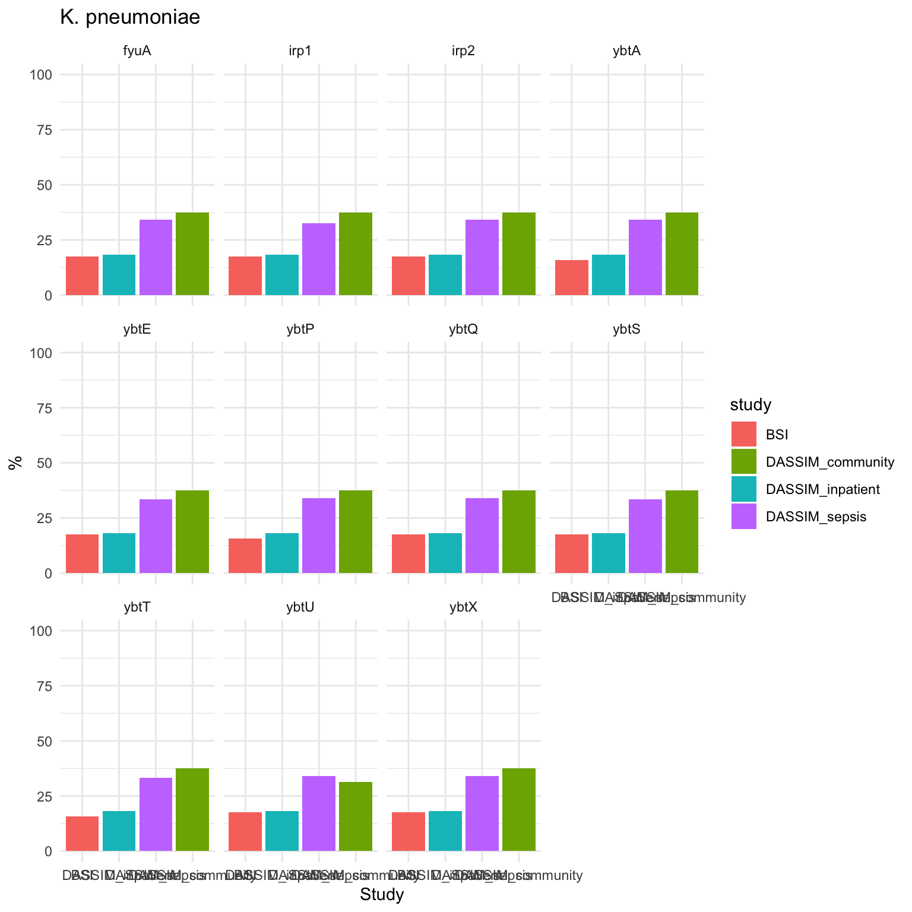
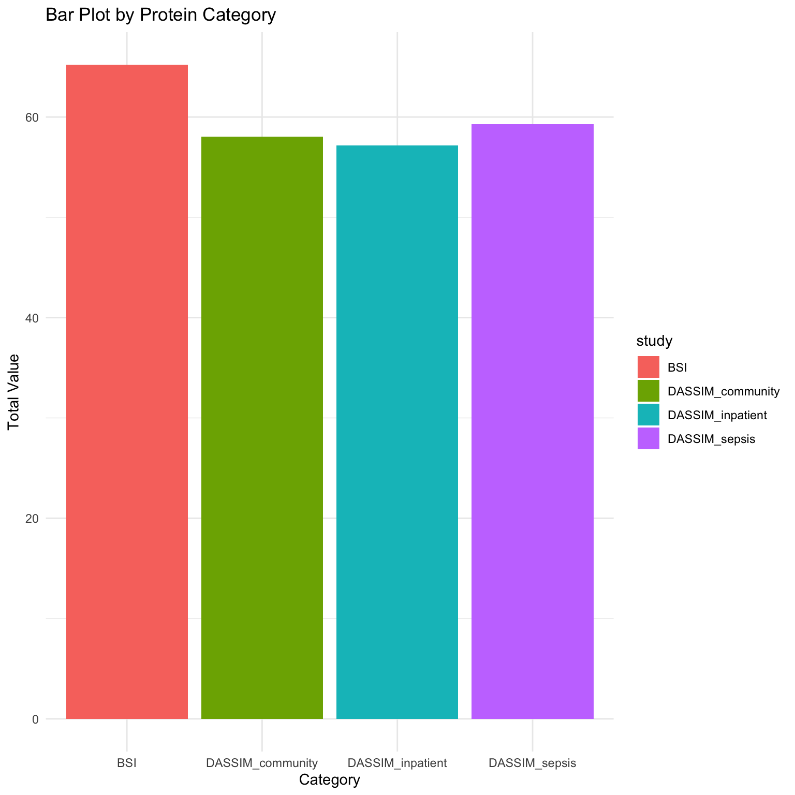
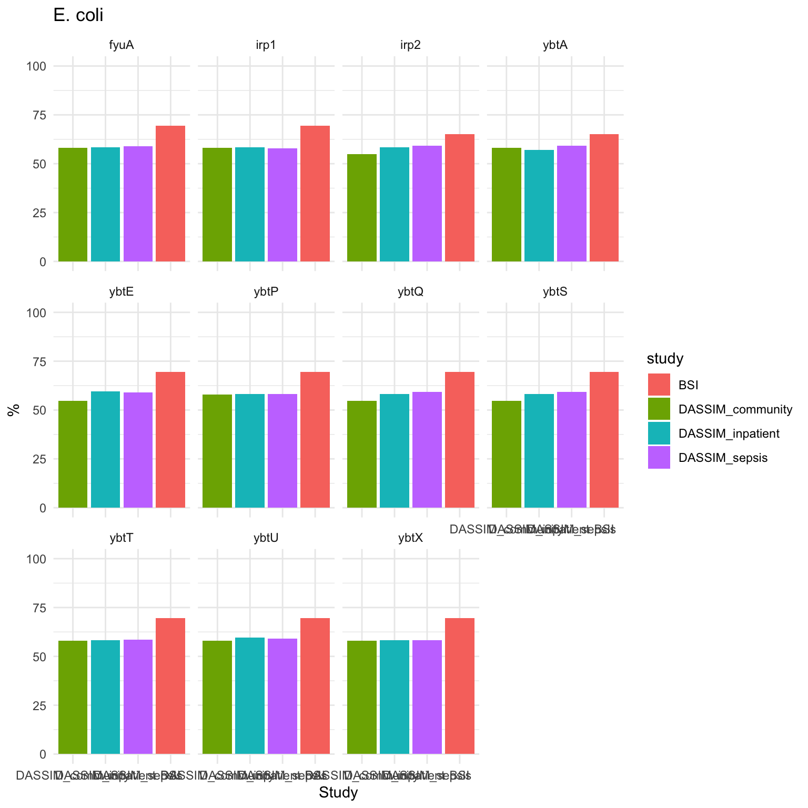
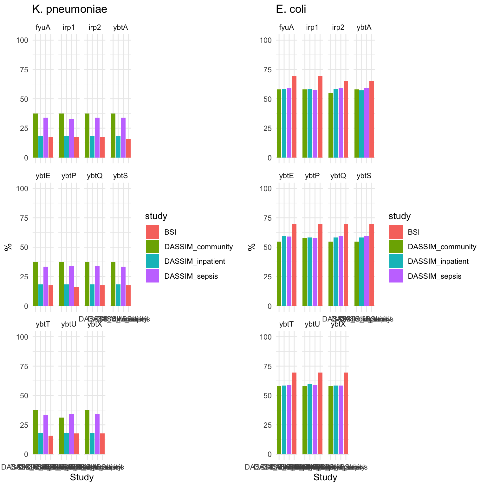

abricate --db resfinder --mincov 60 --minid 90 --csv *.fasta > all_paired_blood_faecal_hybracter_vfdb_fasta_L60_T90_plus_BSI_indicators.csv5: Analysing virulence factor determinants
Introduction
This tutorial screens genomes against the virulence factor database (VFDB) to search for virulence genes and visualises them as a heatmap.
It also shows how the BSI and DASSIM databases were compared.
Part 1 - Genome download and virulence factor screening with abricate
1.1: Download reads and run assemblies
1.2: Run abricate on genomes
Download abricate if you haven’t already, then you can run it simply with the following command.
Part 2 - Plotting virulence factor heatmaps in R
2.1: Import the data
Import the data from abricate
library(readr)
library(dplyr)
library(tidyr)
library(pheatmap)
library(RColorBrewer)
library(readr)
library(reshape2)
library(pheatmap)
library(RColorBrewer)
# Reading in data
abricate_output = readr::read_csv("data/all_paired_blood_faecal_hybracter_vfdb_fasta_L60_T90_plus_BSI_indicators.csv")
ab_tab = abricate_output2.2: Wrangle abricate dataset
rm_duplicates = function(ab_tab)
{
# First Remove duplicates
# These cause issues with creating a lit rather than a dataframe
# When compared against the database there can sometimes be duplciates
# arrange and group by ab_tab
ab_tab_unique <- ab_tab %>%
arrange(GENE, -`%COVERAGE`) %>%
group_by(GENE)
# Check the colnames
colnames(ab_tab_unique)
# Check the duplicates
duplicated(ab_tab_unique[c("#FILE","GENE")])
print("Duplicates found:")
print(c(which(duplicated(ab_tab_unique[c("#FILE","GENE")]) == TRUE))) # see which contain duplicates
# Remove columns that contain duplicates in FILE, GENE and COVERAGE
ab_tab_unique <- ab_tab[!duplicated(ab_tab_unique[c("#FILE","GENE")]),] #using colnames
#ab_tab_unique <- ab_tab_unique[!duplicated(ab_tab_unique[c(1,2)]),] #using col numbers
# Check whether duplicates have been delted
print("Duplicates remaining:")
print(which(duplicated(ab_tab_unique[c("#FILE","GENE")]) == TRUE)) # see which contain duplicates
{
return(ab_tab_unique)
}
}
# Run function
ab_tab_unique = rm_duplicates(ab_tab)[1] "Duplicates found:"
[1] 404 405 406 407 408 409 410 411 412 413 414 415 416 417 418 419 420 421
[1] "Duplicates remaining:"
[1] 724 728 729 733 734 736 740 741 745 748 749 751 752 754 757 758 760 764mk_count_table = function(ab_tab)
{
# Funtion to make the Abricate table wide
# Create a new value from original ab_tab to wide count table
wide = ab_tab %>%
# select strain, gene and resistance and rename
select("#FILE", GENE, RESISTANCE) %>%
# rename
dplyr::rename(gene = "GENE",
file = "#FILE",
resistance = "RESISTANCE") %>%
# count genes vs strains
count(file, gene) %>%
# Convert to wide table with genes as column headers and n as values
pivot_wider(names_from = gene,
values_from = n)
# Shorten strain names (remove the unnecessary string)
wide$file = gsub(".fa", "", wide$file)
wide$file = gsub("_assembled.fasta", "", wide$file)
{
return(wide)
}
}
# Run function
wide = mk_count_table(ab_tab_unique)
wide$file [1] "FSBL0558_hybractersta" "FSBL1386_hybractersta" "FSBL1448_flyesta"
[4] "FSBL1654_hybractersta" "FSBL1925_hybractersta" "FSBL2071_hybractersta"
[7] "FSBL2111_hybractersta" "FSBL2112_hybractersta" "FSBL2130_hybractersta"
[10] "FSBL2155_hybractersta" "FSBL2240_hybractersta" "FSBL2258_hybractersta"
[13] "FSBL2265_hybractersta" "FSFC0558_hybractersta" "FSFC1386_hybractersta"
[16] "FSFC1448_flyesta" "FSFC1654_unicyclersta" "FSFC1925_hybractersta"
[19] "FSFC2071_hybractersta" "FSFC2111K_hybractersta" "FSFC2112_hybractersta"
[22] "FSFC2130_hybractersta" "FSFC2155_hybractersta" "FSFC2240_unicyclersta"
[25] "FSFC2258_hybractersta" "FSFC2265_hybractersta" wide$file <- gsub("_hybractersta", "", wide$file)
wide$file <- gsub("_flyesta", "", wide$file)
wide$file <- gsub("_unicyclersta", "", wide$file)
# check
wide$file [1] "FSBL0558" "FSBL1386" "FSBL1448" "FSBL1654" "FSBL1925" "FSBL2071"
[7] "FSBL2111" "FSBL2112" "FSBL2130" "FSBL2155" "FSBL2240" "FSBL2258"
[13] "FSBL2265" "FSFC0558" "FSFC1386" "FSFC1448" "FSFC1654" "FSFC1925"
[19] "FSFC2071" "FSFC2111K" "FSFC2112" "FSFC2130" "FSFC2155" "FSFC2240"
[25] "FSFC2258" "FSFC2265" # Converts to dataframe
count_to_dataframe = function(wide)
{
wide = wide
# make the genenames a variable
rows = wide$file
# Remove the file column
wide3 = wide %>% select(-file)
# name the rows as strains
rownames(wide3) = rows
# convert to dataframe
d = as.data.frame(wide3)
# convert na to 0
d[is.na(d)] = 0
#name rows
rownames(d) = rows
# convert to matrix
df = d
{
return(df)
}
}
df = count_to_dataframe(wide)
# Converts to matrix
count_to_mat = function(wide)
{
wide = wide
# make the genenames a variable
rows = wide$file
# Remove the file column
wide3 = wide %>% select(-file)
# name the rows as strains
rownames(wide3) = rows
# convert to dataframe
d = as.data.frame(wide3)
# convert na to 0
d[is.na(d)] <- 0
# name rows
rownames(d) = rows
# convert to matrix
mat = as.matrix(d)
{
return(mat)
}
}
# Run Function
mat = count_to_mat(wide)
# Check output
nrow(mat)[1] 26class(mat)[1] "matrix" "array" colnames(mat) [1] "hha" "yagZ/ecpA" "fyuA" "irp1" "irp2" "ybtA"
[7] "ybtE" "ybtP" "ybtQ" "ybtS" "ybtT" "ybtU"
[13] "ybtX" "aslA" "chuA" "chuS" "chuT" "chuU"
[19] "chuV" "chuW" "chuX" "chuY" "entA" "entB"
[25] "entC" "entD" "entE" "entF" "entS" "fdeC"
[31] "fepA" "fepB" "fepC" "fepD" "fepG" "fes"
[37] "fimA" "fimB" "fimC" "fimD" "fimE" "fimF"
[43] "fimG" "fimH" "fimI" "gspC" "gspD" "gspE"
[49] "gspF" "gspG" "gspH" "gspI" "gspJ" "gspK"
[55] "gspL" "gspM" "iucA" "iucB" "iucC" "iucD"
[61] "kpsD" "kpsM" "kpsT" "ompA" "papB" "papI"
[67] "papX" "sat" "senB" "vat" "yagV/ecpE" "yagW/ecpD"
[73] "yagX/ecpC" "yagY/ecpB" "ykgK/ecpR" "afaB-I" "afaC-I" "daaF"
[79] "draA" "draD" "draE2" "draP" rownames(mat) [1] "FSBL0558" "FSBL1386" "FSBL1448" "FSBL1654" "FSBL1925" "FSBL2071"
[7] "FSBL2111" "FSBL2112" "FSBL2130" "FSBL2155" "FSBL2240" "FSBL2258"
[13] "FSBL2265" "FSFC0558" "FSFC1386" "FSFC1448" "FSFC1654" "FSFC1925"
[19] "FSFC2071" "FSFC2111K" "FSFC2112" "FSFC2130" "FSFC2155" "FSFC2240"
[25] "FSFC2258" "FSFC2265" 2.3: Plot a basic heatmap
Next we will select the mutations based
# convert to binary
df = count_to_dataframe(wide)
df <- ifelse(df > 0, 1, 0)
# Generate basic heatmap
pheatmap(df)
2.3: Plot an annotated heatmap
# Generate the heatmap with annotations
isolates = read_csv("data/Isolate_species.csv")
isolates_df = as.data.frame(isolates)
isolates_df = isolates_df[-1,]
species_colors <- c("K. pneumoniae" = "#DDAD3B",
"E. coli" = "#9F7831",
"K. quasipneumoniae similipneumoniae" = "#666666")
# Annotation for isolates (y-axis)
annotation_row <- data.frame(Species = isolates_df$Species)
rownames(annotation_row) <- isolates_df$Isolate
vfdb_class = read_csv("data/VFDB_classes.csv")
vfdb_class_df = as.data.frame(vfdb_class)
class_colors <- c("Protectins" = "#4B9B7A",
"Toxins" = "#CA6728",
"Iron-uptake" = "#D43F88",
"Adhesins" = "#7470AF")
# Annotation for isolates (x-axis)
annotation_col <- data.frame(class = vfdb_class_df$class)
rownames(annotation_col) <- vfdb_class_df$GENE
# Create a list of annotation colors
annotation_colors <- list(class = class_colors, Species = species_colors)
custom_colors <- colorRampPalette(c("#FFFFFF","#FBF5BB", "#FADF9F", "#F8B877", "#D37A5A", "#A84451"))(6)
pheatmap(df,
annotation_col = annotation_col,
annotation_row = annotation_row,
annotation_colors = annotation_colors,
color = custom_colors,
show_rownames = TRUE,
show_colnames = TRUE,
border_color = "black")
Part 3 - Comparison of virulence factors across datasets in R
3.1: Import the data
Import the data from abricate for 773 isolates from the BSI and DASSIM datasets.
# Load necessary libraries
library(readxl)
library(readr)
library(pheatmap)
library(dplyr)
library(tidyr)
library(tibble)
library(RColorBrewer)
# 772 Malawi Kleb Strains
abricate_output = readr::read_csv("data/all_abricate_773_Ec_Kp_CHL_VFDB_fasta_L60_T90.csv")
ab_tab = abricate_output #DASSIM <- DASSIM %>% select(matches("^ybt|^irp|^fyu"))
iron_VF <- ab_tab %>% filter(grepl("ybt|fyu|irp", GENE))3.2: Wrangle dataset
# Remove duplicates
ab_tab_unique = rm_duplicates(ab_tab)[1] "Duplicates found:"
[1] 67 630 750 754 757 761 770 788 793 3914 4276 4279
[13] 4288 4291 4304 4319 4321 4482 4487 4497 4501 4515 4537 5093
[25] 5130 5174 5221 5321 5880 5914 5915 5922 5975 6017 8089 8780
[37] 9523 9759 9992 10037 10120 10123 10176 10195 10196 10197 10584 10598
[49] 10600 10602 10603 10703 10711 10948 10949 12707 12949 13359 13503 13537
[61] 13599 13667 14220 15243 15245 15320 15325 15389 15411 15456 15554 15606
[73] 16078 17304 17306 17418 17425 17512 17593 17892 17919 18066 18068 18258
[85] 18992 19318 20957 20958 21293 21648 22228 22317 22449 22560 22667 22673
[97] 22674 23783 23785 23796 23798 23803 23822 23824 23855 23858 23882 23910
[109] 23912 23922 23935 23944 23995 24008 24012 24017 24020 24073 24075 24086
[121] 24088 24093 24112 24114 24145 24148 24172 24200 24202 24212 24225 24235
[133] 24300 25000 25095 25100 25103 25110 25376 26040 26104 26150 26213 26273
[145] 26325 26356 26359 26368 26371 26404 26407 26516 26518 26555 26559 26644
[157] 26647 26655 26666 26671 26673 26675 26677 26682 26686 26690 26692 26694
[169] 26701 26704 26706 26710 26720 26722 26726 26746 26749 26758 26762 26782
[181] 26866 26869 26899 26907 26909 26911 26913 26929 26933 26937 26948 26952
[193] 26974 27016 27267 27271 27272 28096 28133 28198 28364 28366 28876 28941
[205] 29050 29111 29641 29672 29673 29732 29797 30328 30365 30367 30375 30431
[217] 30538 31116 31151 31159 31213 31257 31283 34416 34417 34942 34977 34985
[229] 35040 35108 35171
[1] "Duplicates remaining:"
[1] 1075 1083 1411 1414 3115 3116 3198 3199 3284 3967 3977 3978
[13] 4220 4221 4406 4407 4885 4886 5738 6502 6504 7153 7154 7235
[25] 7236 7692 7776 7779 7853 7859 7938 7941 8019 8022 8385 8422
[37] 9591 9592 9593 9594 9597 9599 9609 9610 9998 10000 10002 10012
[49] 10013 10014 10019 10508 10511 10624 10891 11065 11456 11457 11697 11698
[61] 11945 11951 12493 12650 12948 12957 12958 14295 14328 14417 14418 14537
[73] 14543 14999 15000 15143 15146 15152 15239 15240 15252 15253 15254 15291
[85] 15298 15299 15300 15306 15307 15401 15430 15646 15647 15665 15685 15704
[97] 15728 15792 15799 16387 16388 16389 16392 16393 16394 16398 17238 17239
[109] 18350 18351 18444 18445 18575 18606 18609 18930 19407 19413 19414 19627
[121] 19628 19934 19979 20757 20758 20759 20952 20953 21293 21720 21721 22104
[133] 22105 22672 22724 22725 23400 23427 23428 23431 23615 25109 25110 25118
[145] 25132 25566 25946 25964 25987 26450 26451 26494 26793 27176 27192 28250
[157] 28251 28274 28276 28277 28278 28279 28280 28801 28806 28818 28819 28820
[169] 28824 28883 28884 28891 28896 28901 28902 28903 28904 28905 28971 28977
[181] 28978 28979 28992 29884 29907 29908 29909 29917 29918 29919 29920 29921
[193] 29922 30323 30584 30594 30634 30635 30952 30971 30979 31031 32253 32262
[205] 32347 32358 32359 32485 32499 32500 32594 32652 32653 32787 32979 33063
[217] 33513 33514 33517 33533 33542 34034 34037 34038 34039 34040 34041 34089
[229] 34096# Make count table
wide = mk_count_table(ab_tab_unique)
# Rename necessary
wide$file = gsub("all_spades_assemblies/", "", wide$file)
wide$file = gsub(".fa", "", wide$file)
wide$file = gsub(".fasta", "", wide$file)
wide$file = gsub("_assembledsta", "", wide$file)
wide$file = gsub("_1_SPAdes_assemblysta", "", wide$file)
wide$file = gsub("_assembled.fasta", "", wide$file)
wide$file = gsub("_contigssta", "", wide$file)
wide$file = gsub("sta", "", wide$file)
# Convert count table to dataframe
d = count_to_dataframe(wide)
# Convert count table to matrix
mat = count_to_mat(wide)3.3: Filter for ybt + fyu + irp
# Filter the dataframe for the column "ybt"
#filtered_df <- d[, grepl("ybt", colnames(d)), drop = FALSE]
#filtered_df$seq = rownames(filtered_df)
# Filter the dataframe for columns containing "ybt", "fyu", or "irp"
filtered_df <- d[, grepl("ybt|fyu|irp", colnames(d)), drop = FALSE]
# Add row names as a new column
filtered_df$seq <- rownames(filtered_df)
# View the filtered dataframe
head(filtered_df) fyuA irp1 irp2 ybtA ybtE ybtP ybtQ ybtS ybtT ybtU ybtX seq
26141-1-134 1 1 1 1 1 1 1 1 1 1 1 26141-1-134
26141-1-135 1 1 1 1 1 1 1 1 1 1 1 26141-1-135
26141-1-136 1 1 1 1 1 1 1 1 1 1 1 26141-1-136
26141-1-137 1 1 1 1 1 1 1 1 1 1 1 26141-1-137
26141-1-138 0 0 0 0 0 0 0 0 0 0 0 26141-1-138
26141-1-139 1 1 1 1 1 1 1 1 1 1 1 26141-1-139# Sum values by category
library(dplyr)3.4: Join to metadata
metadata = read_csv("data/all_773_DASSIM_BSI_metadata.csv")
BSI_metadata_Ec = read_csv("data/BSI_metadata_Ec.csv")
BSI_metadata_KpSc = read_csv("data/BSI_metadata_KpSc_2.csv")
library(dplyr)
library(stringr)
filtered_df <- d[, grepl("ybt|fyu|irp", colnames(d)), drop = FALSE]
filtered_df$seq <- rownames(filtered_df)
filtered_df <- filtered_df %>%
mutate(seq = gsub("-", "_", seq))
rownames(filtered_df) = gsub("-", "_", rownames(filtered_df))
# DASSIM ERR3865256 28099_1_10 ERR3865256
# Create a named vector for replacement
replacement_map <- setNames(metadata$ENA_accession, metadata$lane)
# Perform the replacement
filtered_df <- filtered_df %>%
mutate(accession = str_replace_all(seq, replacement_map) # Replace lanes with ENA accessions
)
comparison_df = data.frame(accession = metadata$ENA_accession,
lane = metadata$lane)
# Add the accession column with conditional logic
filtered_df[,"accession"] <- ifelse(
grepl("^E", filtered_df[,"seq"]), # Check if seq starts with "E"
filtered_df[,"seq"], # If true, copy seq to accession
comparison_df$accession[match(unlist(filtered_df[,"seq"]), comparison_df$lane)] # Otherwise, match and replace
)
# View the results
print(filtered_df["28099_1_10",]) # Should be ERR3865256 fyuA irp1 irp2 ybtA ybtE ybtP ybtQ ybtS ybtT ybtU ybtX seq
28099_1_10 0 0 0 0 0 0 0 0 0 0 0 28099_1_10
accession
28099_1_10 ERR3865256# Reshape and summarize data for wide
metadata$accession = metadata$ENA_accession
metadata_Ec_update = metadata %>%
left_join(BSI_metadata_Ec, by = c('Strain_ID'))
metadata_KpSc_update = metadata_Ec_update %>%
left_join(BSI_metadata_KpSc, by = c('Strain_ID'))
meta_join = filtered_df %>%
left_join(metadata_KpSc_update, by = c('accession'))
# For KpSC
unique(meta_join$Species)[1] "E. coli" NA "KpSC" meta_join_KpSc = meta_join %>% filter(Species == "KpSC")
unique(meta_join$study )[1] "DASSIM" NA "bacteraemia"DASSIM = meta_join_KpSc %>% filter(study == "DASSIM")
BSI = meta_join_KpSc %>% filter(study == "bacteraemia")
BSI = BSI %>% filter(Source.y == "Blood")
BSI$Source.y [1] "Blood" "Blood" "Blood" "Blood" "Blood" "Blood" "Blood" "Blood" "Blood"
[10] "Blood" "Blood" "Blood" "Blood" "Blood" "Blood" "Blood" "Blood" "Blood"
[19] "Blood" "Blood" "Blood" "Blood" "Blood" "Blood" "Blood" "Blood" "Blood"
[28] "Blood" "Blood" "Blood" "Blood" "Blood" "Blood" "Blood" "Blood" "Blood"
[37] "Blood" "Blood" "Blood" "Blood" "Blood" "Blood" "Blood" "Blood" "Blood"
[46] "Blood" "Blood" "Blood" "Blood" "Blood" "Blood" "Blood" "Blood" "Blood"
[55] "Blood" "Blood" "Blood"#DASSIM = DASSIM %>% select(starts_with("ybt"))
#BSI= BSI %>% select(starts_with("ybt"))
DASSIM <- DASSIM %>% select(matches("^ybt|^irp|^fyu"))
BSI <- BSI %>% select(matches("^ybt|^irp|^fyu"))
summarized_DASSIM <- DASSIM %>% summarize(across(where(is.numeric), mean) * 100)
summarized_BSI <- BSI %>% summarize(across(where(is.numeric), mean) * 100)
summarized_DASSIM$study = "DASSIM"
summarized_BSI$study = "BSI"
# Reshape and summarize data
summarized_pc = rbind(summarized_DASSIM, summarized_BSI)
# Bar plot
library(ggplot2)
ggplot(summarized_pc, aes(x = study, y = ybtA, fill = study)) +
geom_bar(stat = "identity") +
labs(x = "Category", y = "Total Value", title = "Bar Plot by Protein Category") +
theme_minimal()
3.5: Join to DASSIM metadata
DASSIM_meta = read_csv("data/DASSIM_metadata.csv")
library(dplyr)
library(stringr)
meta_join_DASSIM = meta_join %>%
left_join(DASSIM_meta, by = c('accession'))3.6: Klebsiella pneumoniae species complex (KpSc)
# For KpSC
unique(meta_join_DASSIM$Species)[1] "E. coli" NA "KpSC" meta_join_KpSc_DASSIM = meta_join_DASSIM %>% filter(Species == "KpSC")
unique(meta_join$study)[1] "DASSIM" NA "bacteraemia"DASSIM = meta_join_KpSc_DASSIM %>% filter(study == "DASSIM")
DASSIM_sepsis = DASSIM %>% filter(condition == "sepsis")
DASSIM_inpatient = DASSIM %>% filter(condition == "inpatient")
DASSIM_community = DASSIM %>% filter(condition == "community")
BSI = meta_join_KpSc_DASSIM %>% filter(study == "bacteraemia")
BSI = BSI %>% filter(Source.y == "Blood")
#DASSIM_sepsis = DASSIM_sepsis %>% select(starts_with("ybt"))
#DASSIM_inpatient = DASSIM_inpatient %>% select(starts_with("ybt"))
#DASSIM_community = DASSIM_community %>% select(starts_with("ybt"))
#BSI = BSI %>% select(starts_with("ybt"))
# Select columns that start with "ybt", "adr", or "ppy"
DASSIM_sepsis = DASSIM_sepsis %>% select(matches("^ybt|^irp|^fyu"))
DASSIM_inpatient = DASSIM_inpatient %>% select(matches("^ybt|^irp|^fyu"))
DASSIM_community = DASSIM_community %>% select(matches("^ybt|^irp|^fyu"))
BSI = BSI %>% select(matches("^ybt|^irp|^fyu"))
nrow(DASSIM_sepsis) # 138[1] 138nrow(DASSIM_inpatient) # 33[1] 33nrow(DASSIM_community) # 16[1] 16nrow(BSI) # 57[1] 57# summarized_DASSIM_sepsis = DASSIM_sepsis %>% summarize(across(where(is.numeric), mean) * 100)
summarized_DASSIM_sepsis = DASSIM_sepsis %>% summarize(across(where(is.numeric), ~ sum(. == 1) / n() * 100))
summarized_DASSIM_inpatient = DASSIM_inpatient %>% summarize(across(where(is.numeric), ~ sum(. == 1) / n() * 100))
summarized_DASSIM_community = DASSIM_community %>% summarize(across(where(is.numeric), ~ sum(. == 1) / n() * 100))
summarized_BSI <- BSI %>% summarize(across(where(is.numeric), ~ sum(. == 1) / n() * 100))
summarized_DASSIM_sepsis$study = "DASSIM_sepsis"
summarized_DASSIM_inpatient$study = "DASSIM_inpatient"
summarized_DASSIM_community$study = "DASSIM_community"
summarized_BSI$study = "BSI"
# Reshape and summarize data
summarized_pc = rbind(summarized_DASSIM_sepsis, summarized_DASSIM_inpatient, summarized_DASSIM_community, summarized_BSI)
# Bar plot
library(ggplot2)
ggplot(summarized_pc, aes(x = study, y = ybtA, fill = study)) +
geom_bar(stat = "identity") +
labs(x = "Category", y = "Total Value", title = "Bar Plot by Protein Category") +
theme_minimal()
# Convert to long ##
summarized_long_pc = summarized_pc %>% pivot_longer(!study, names_to = "gene", values_to = "count")
summarized_pc_for_paper_KpSc = summarized_long_pc %>% group_by(study) %>% summarize(meant_count = mean(count))
summarized_long_pc$order <- factor(summarized_long_pc$study, levels = sort(unique(summarized_long_pc$study)))
level_order <- c('BSI', 'DASSIM_inpatient', 'DASSIM_sepsis', "DASSIM_community")
KPSC_plot = ggplot(summarized_long_pc, aes(x = factor(study, level = level_order), y = count, fill = study)) +
geom_bar(stat = "identity") +
ylim(0, 100) +
labs(x = "Study", y = "%", title = "K. pneumoniae") +
theme_minimal() + facet_wrap(~ gene)
KPSC_plot
3.7: E. coli
# For Ecoli
unique(meta_join_DASSIM$Species)[1] "E. coli" NA "KpSC" meta_join_Ecoli_DASSIM = meta_join_DASSIM %>% filter(Species == "E. coli")
unique(meta_join$study)[1] "DASSIM" NA "bacteraemia"DASSIM = meta_join_Ecoli_DASSIM %>% filter(study == "DASSIM")
DASSIM_sepsis = DASSIM %>% filter(condition == "sepsis")
DASSIM_inpatient = DASSIM %>% filter(condition == "inpatient")
DASSIM_community = DASSIM %>% filter(condition == "community")
BSI = meta_join_Ecoli_DASSIM %>% filter(study == "bacteraemia")
BSI = BSI %>% filter(Source.x == "Blood")
#DASSIM_sepsis = DASSIM_sepsis %>% select(starts_with("ybt"))
#DASSIM_inpatient = DASSIM_inpatient %>% select(starts_with("ybt"))
#DASSIM_community = DASSIM_community %>% select(starts_with("ybt"))
#BSI = BSI %>% select(starts_with("ybt"))
DASSIM_sepsis = DASSIM_sepsis %>% select(matches("^ybt|^irp|^fyu"))
DASSIM_inpatient = DASSIM_inpatient %>% select(matches("^ybt|^irp|^fyu"))
DASSIM_community = DASSIM_community %>% select(matches("^ybt|^irp|^fyu"))
BSI = BSI %>% select(matches("^ybt|^irp|^fyu"))
nrow(DASSIM_sepsis) # 334[1] 334nrow(DASSIM_inpatient) # 84[1] 84nrow(DASSIM_community) # 31[1] 31nrow(BSI) # 23[1] 23# summarized_DASSIM_sepsis = DASSIM_sepsis %>% summarize(across(where(is.numeric), mean) * 100)
summarized_DASSIM_sepsis = DASSIM_sepsis %>% summarize(across(where(is.numeric), ~ sum(. == 1) / n() * 100))
summarized_DASSIM_inpatient = DASSIM_inpatient %>% summarize(across(where(is.numeric), ~ sum(. == 1) / n() * 100))
summarized_DASSIM_community = DASSIM_community %>% summarize(across(where(is.numeric), ~ sum(. == 1) / n() * 100))
summarized_BSI <- BSI %>% summarize(across(where(is.numeric), ~ sum(. == 1) / n() * 100))
summarized_DASSIM_sepsis$study = "DASSIM_sepsis"
summarized_DASSIM_inpatient$study = "DASSIM_inpatient"
summarized_DASSIM_community$study = "DASSIM_community"
summarized_BSI$study = "BSI"
# Reshape and summarize data
summarized_pc = rbind(summarized_DASSIM_sepsis, summarized_DASSIM_inpatient, summarized_DASSIM_community, summarized_BSI)
# Bar plot
library(ggplot2)
ggplot(summarized_pc, aes(x = study, y = ybtA, fill = study)) +
geom_bar(stat = "identity") +
labs(x = "Category", y = "Total Value", title = "Bar Plot by Protein Category") +
theme_minimal()
# Convert to long ##
summarized_long_pc = summarized_pc %>% pivot_longer(!study, names_to = "gene", values_to = "count")
summarized_pc_for_paper_Ec = summarized_long_pc %>% group_by(study) %>% summarize(meant_count = mean(count))
summarized_long_pc$order <- factor(summarized_long_pc$study, levels = sort(unique(summarized_long_pc$study)))
level_order <- c("DASSIM_community", 'DASSIM_inpatient', 'DASSIM_sepsis', 'BSI')
Ecoli_plot = ggplot(summarized_long_pc, aes(x = factor(study, level = level_order), y = count, fill = study)) +
geom_bar(stat = "identity") +
ylim(0, 100) +
labs(x = "Study", y = "%", title = "E. coli") +
theme_minimal() + facet_wrap(~ gene)
Ecoli_plot
3.8: E. coli and KpSc plotted together
library(ggpubr)
ggarrange(KPSC_plot, Ecoli_plot, ncol = 2, nrow = 1)